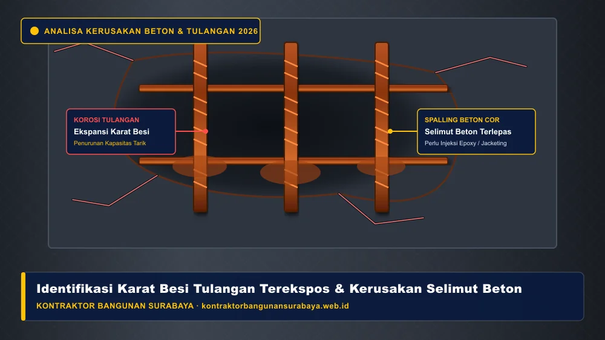

1. Tanda-Tanda Kerusakan Struktur Bangunan yang Perlu Diwaspadai
Apa saja tanda-tanda kerusakan struktur bangunan yang perlu diwaspadai?
Tanda-tanda kerusakan struktur bangunan yang perlu diwaspadai antara lain retak diagonal pada dinding, pintu atau jendela yang tiba-tiba sulit dibuka tutup, lantai yang terasa miring, serta munculnya karat pada besi tulangan yang terekspos. kontraktorbangunansurabaya.web.id membantu pemilik bangunan di Surabaya mengenali tanda-tanda awal ini agar penanganan dapat dilakukan sebelum kerusakan berkembang lebih serius.
Struktur utama sebuah bangunan—yang terdiri dari pondasi, sloof, kolom praktis, balok gantung, hingga plat lantai beton—merupakan tulang punggung penopang seluruh beban hidup dan beban mati. Ketika salah satu elemen pendukung mengalami kegagalan mekanis atau penurunan daya dukung tanah dasar di wilayah Surabaya, bangunan akan memberikan sinyal peringatan fisik yang tampak pada elemen arsitektural maupun elemen penutup.
Pentingnya Integritas Struktural Gedung & Hunian
Mengenali gejala deformasi sejak tahap dini memungkinkan tindakan kuratif yang tepat sasaran, menjaga nilai aset properti, serta melindungi keselamatan seluruh penghuni di dalamnya.
2. Jenis Retak yang Menandakan Masalah Struktural Serius
Retak diagonal yang muncul di sekitar sudut pintu atau jendela, terutama dengan lebar yang terus bertambah dari waktu ke waktu, umumnya menandakan adanya pergerakan atau penurunan pada bagian pondasi bangunan, berbeda dengan retak rambut halus akibat penyusutan material finishing yang relatif tidak berbahaya.
Retak horizontal pada dinding yang sejajar dengan garis balok atau sloof juga perlu diwaspadai, karena bisa menjadi indikasi masalah pada sambungan struktural, terutama apabila disertai dengan gejala lain seperti pintu yang mulai sulit ditutup rapat.
Retak pada pertemuan antara dua material berbeda, misalnya antara dinding bata dan kolom beton, juga perlu diperhatikan meski umumnya bersifat retak susut yang tidak terlalu berbahaya, namun tetap sebaiknya dipantau apabila lebarnya terus bertambah dari waktu ke waktu.
| Kategori Retak | Arah & Pola Retakan | Potensi Penyebab Teknis | Tingkat Urgensi |
|---|---|---|---|
| Retak Diagonal Kusen | Kemiringan 45° dari sudut pintu/jendela | Penurunan pondasi setempat (differential settlement) | Sangat Kritis |
| Retak Horizontal Dinding | Garis mendatar sejajar balok atau sloof | Beban lentur berlebih, defleksi balok, atau gempa | Waspada Tinggi |
| Retak Sambungan Kolom-Bata | Garis vertikal lurus pada batas kolom | Penyusutan plesteran / tidak adanya stek besi pengikat | Perlu Pemantauan |
| Retak Rambut Pola Acak | Pola sarang laba-laba sangat tipis (<1 mm) | Pengeringan acian semen instan yang terlalu cepat | Kosmetik / Ringan |
3. Tanda Fisik Lain yang Mengindikasikan Penurunan Struktur
Lantai yang terasa miring atau bergelombang saat dilalui, meski hanya sedikit, dapat menjadi indikasi penurunan pondasi yang tidak merata, sehingga sebaiknya diperiksa lebih lanjut oleh tenaga ahli struktur, terutama jika gejala ini muncul pada bangunan yang belum terlalu lama dibangun.

Munculnya karat pada besi tulangan yang terekspos akibat lapisan beton pelindungnya (selimut beton) terkelupas juga menjadi tanda serius, karena karat yang dibiarkan dapat mengembang dan mempercepat kerusakan pada beton di sekitarnya, sehingga penanganan sebaiknya tidak ditunda terlalu lama.
Suara berderit atau berbunyi pada struktur kayu, seperti rangka atap atau lantai panggung, saat dilalui juga bisa menjadi indikasi awal pelapukan atau kerusakan pada sambungan struktural kayu, terutama pada bangunan yang sudah berusia cukup lama.
Langkah Tepat (Do's)
- Tandai Ujung Retakan: Beri garis pensil dan tanggal pada ujung retak untuk memantau pertambahannya.
- Gunakan Alat Laser Level: Ukur elevasi kelurusan kusen pintu dan kerataan lantai keramik secara berkala.
- Amankan Area Sekitar: Hindari menempatkan beban berat di atas balok atau dak beton yang mengalami keretakan.
- Hubungi Ahli Sipil: Mintalah audit visual dan evaluasi teknis dari kontraktor terpercaya di Surabaya.
Hindari Hal Ini (Don'ts)
- Menutup Retak dengan Dempul Saja: Menutup retak struktural tanpa perkuatan hanya menyamarkan bahaya.
- Membiarkan Besi Berkarat: Oksidasi baja akan merusak selimut beton di sekitarnya secara bertahap.
- Menambah Lantai Tanpa Cek Pondasi: Menambah beban tingkat atas pada struktur yang sudah retak sangat berisiko.
- Mengabaikan Kebocoran Air: Rembesan air hujan mempercepat degradasi mutu beton cor dan tulangan.
4. Langkah Penanganan Dini Bersama Tim Ahli kontraktorbangunansurabaya.web.id
Dokumentasi foto secara berkala pada retak atau gejala kerusakan yang ditemukan membantu memantau apakah kondisi tersebut berkembang atau stabil dari waktu ke waktu, sehingga keputusan mengenai perlunya penanganan lebih lanjut dapat diambil berdasarkan data, bukan hanya perkiraan visual sesaat.
kontraktorbangunansurabaya.web.id menyediakan layanan pemeriksaan struktur untuk bangunan yang menunjukkan tanda-tanda kerusakan seperti di atas, membantu menentukan apakah diperlukan perkuatan struktur atau penanganan lain sebelum kerusakan berkembang menjadi masalah yang lebih besar dan mahal untuk diperbaiki.
Konsultasi dini dengan tenaga ahli struktur, meski gejala yang terlihat masih tergolong ringan, jauh lebih dianjurkan dibanding menunggu hingga kerusakan benar-benar mengganggu fungsi bangunan, karena biaya penanganan dini umumnya jauh lebih terjangkau dibanding perbaikan struktural besar.
Pemeriksaan tanda kerusakan ini sebaiknya menjadi bagian dari jadwal maintenance rutin. Baca kembali panduan mengenai layanan maintenance gedung berkala yang mencakup ruang lingkup pemeriksaan struktural secara menyeluruh.
Tahapan Pemeriksaan & Rekayasa Perbaikan Struktur
- Survei Visual & Pemetaan Keretakan: Pemetaan crack mapping, pengukuran lebar celah retak, dan arah rambatan deformasi.
- Pemeriksaan Kerataan Elemen: Pengecekan elevasi lantai dan ketegakan kolom dengan alat waterpass digital / laser meter.
- Analisis Tingkat Resiko Teknis: Evaluasi beban eksisting versus kapasitas daya dukung pondasi serta kolom penopang.
- Penyusunan Metode Kerja Perbaikan: Rekomendasi teknis spesifik (injeksi epoxy resin, jacketing kolom beton, perkuatan baja, atau underpinning pondasi).
- Penyusunan RAB Terperinci: Kalkulasi anggaran material dan upah kerja secara transparan tanpa biaya tersembunyi.
- Pelaksanaan Perbaikan & Garansi: Eksekusi perbaikan struktural dengan standar K3 dan pengawasan ketat oleh insinyur sipil.
5. FAQ Seputar Kerusakan Struktur Bangunan
Konsultasi Gratis Sekarang
Ingin berdiskusi lebih lanjut mengenai kebutuhan konstruksi bangunan Anda di Surabaya? Hubungi tim kami melalui WhatsApp di 0889-8964-3555 untuk konsultasi awal tanpa biaya bersama kontraktorbangunansurabaya.web.id.
Konsultasi WhatsApp di 0889-8964-3555
Reza Maulana Nehru
Praktisi & Penulis Edukasi Konstruksi Bangunan di Kontraktor Bangunan Surabaya. Berfokus pada evaluasi integritas struktur bangunan, inspeksi mutu beton bertulang, penanganan penurunan pondasi, dan standarisasi maintenance gedung di Surabaya.